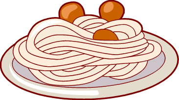

I've loved showtunes (songs from musicals) above most genres for a good chunk of my life. That era may be coming to a close, but the personal importance is hardly lessened. My favorites are mostly by Stephen Sondheim. Into the Woods (not the Disney version) is probably my most favorite. Hamilton's lept up into the list too.
Recently, I've gotten into jazz-hop. I'm 90% sure that's what the genre is called. It's like hip-hop, but incorporates more jazz elements. It's really chill stuff.
Oh wow, I put a section about movies in here, didn't I? Uh, hmm. I like Disney stuff? Beauty and the Beast is the best Disney movie. But the stage musical is better. I'll get back to you on this one.
I've been following Once and Game of Thrones for awhile now. I also like Stephen Colbert, whatever format he may come on. Also, maybe I might like just a small helping of that anime those chinese cartoons mhm yeah. For variety. To be honest, I'm not really sure why the consensus is that I'm supposed to be embarassed about it, but I'll roll with it, I guess.
Yes I do like some food if I do say so myself, yes sir. I was raised by Italians so I'm gonna love muh pastas and pizzas. I was able to introduce my boyfriend to Mexican, which is fantastic, but also bittersweet because the UK doesn't get good Mexican food. On the flip side, he converted me to chip shop food (especially kebabs) and Indian, which we don't really get over here either. Ah me.
